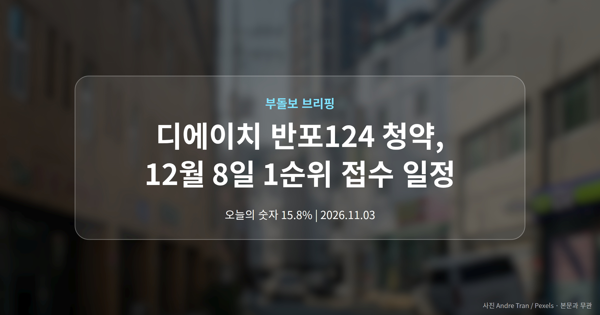
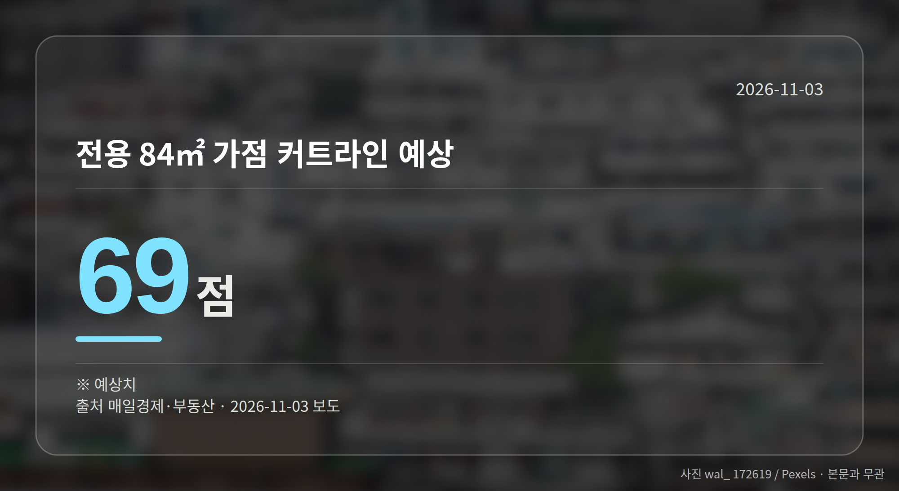
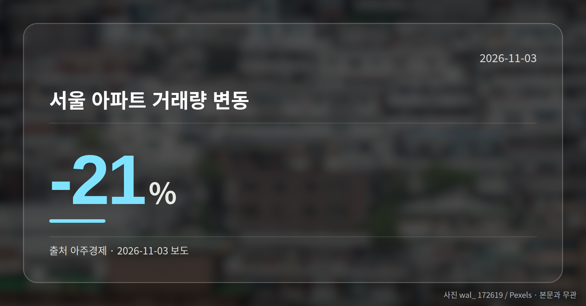
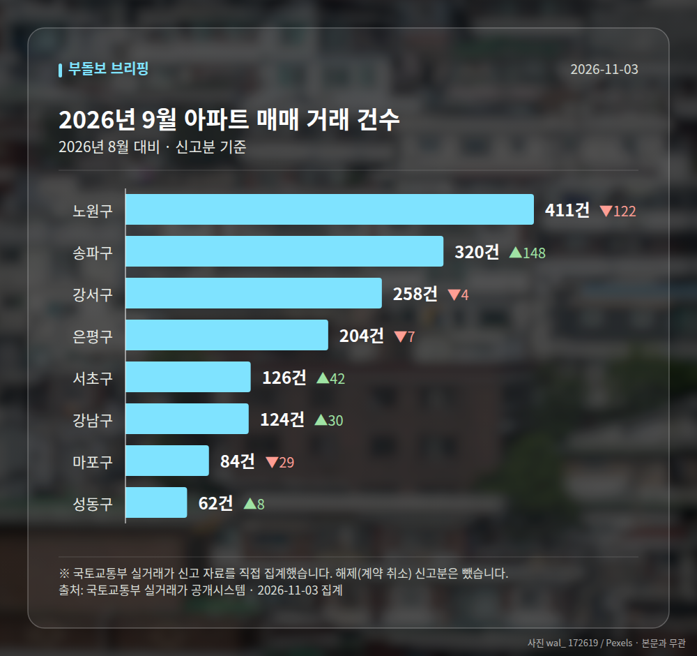

이 글은 2026년 11월 3일 기준으로 정리한 내용입니다. 실거래 수치는 2026년 9월 신고분입니다.
서울 서초구 디에이치 반포124 청약이 다음 달 8일 1순위 접수를 시작합니다. 총 1801가구 규모이고, 매일경제·부동산은 전용 84㎡ 가점 커트라인을 69점으로 예상했습니다.
가점이 높지 않다면 평형과 공급 유형을 나눠서 보는 쪽이 현실적이라는 이야기가 나옵니다. 오늘은 이 단지를 중심으로 짚어보겠습니다.
1순위(청약통장 가입 기간 등 요건을 채운 1차 신청 자격)는 12월 8일입니다.
| 항목 | 내용 |
|---|---|
| 총 가구수 | 1801가구 |
| 1순위 접수일 | 2026년 12월 8일 |
| 전용 84㎡ 예상 가점 커트라인 | 69점 |
| 예상 시세차익 | 30억원 안팎 |
| 거론되는 현금 보유 | 최소 20억원 |
출처는 모두 매일경제·부동산 보도입니다. 시세차익은 '기대된다'는 전망이고, 커트라인도 확정값이 아니라 예상치라는 점은 먼저 짚어두겠습니다.

가점(무주택 기간·부양가족 수·청약통장 가입 기간을 점수로 매긴 것)이 앞서 본 예상선에 못 미친다면 전용 84㎡ 경쟁은 쉽지 않습니다.
보도에서는 상대적으로 부담이 적은 59㎡에 경쟁이 몰릴 것으로 봤습니다. 신생아 가구는 특별공급을, 1주택자는 추첨제(가점과 상관없이 무작위로 뽑는 방식)를 살펴볼 만하다는 조언도 함께 나왔습니다.
다만 전제로 거론된 현금 최소 20억원은 당첨 이후 실제로 자금을 치를 수 있는지를 가르는 조건입니다. 평형 전략보다 자금 계획을 먼저 세우는 편이 순서에 맞습니다.
이번 내용은 한 매체의 보도여서 다른 곳과 교차 확인이 어렵습니다. 예상 커트라인은 실제 결과와 달라질 수 있다는 점도 함께 기억해 두시면 좋겠습니다.
청약 전에는 모집공고문에 적힌 공급 유형별 물량과 자격 요건을 직접 확인하시는 편이 안전합니다.

서울 8개 구에서 신고된 매매는 1589건입니다. 2026년 8월 1523건과 견주면 +66건입니다.
거래가 많은 곳: 노원구 411건(-122) · 송파구 320건(+148) · 강서구 258건(-4)
노원구 전세가율(전세 보증금 ÷ 매매가)은 가운뎃값 52.5%입니다. 같은 단지·같은 면적 90곳을 견줬습니다.
서울 25개 구 가운데 거래가 가장 크게 움직인 곳: 송파구 +86.0%(172→320건, 장지동에 59.1% 몰림) · 서초구 +50.0%(84→126건)
2026년 10월 계약 신고가

→ 그림 파일 img-stats-volume.png 을 이 자리에 올리세요
국토교통부 실거래가 신고 자료를 직접 집계했습니다. 해제(계약 취소) 신고분은 뺐습니다.
여러분은 이번 청약에서 평형과 가점 가운데 어느 쪽을 먼저 보고 계신가요?
댓글로 알려 주시면 다음 글에 반영하겠습니다.